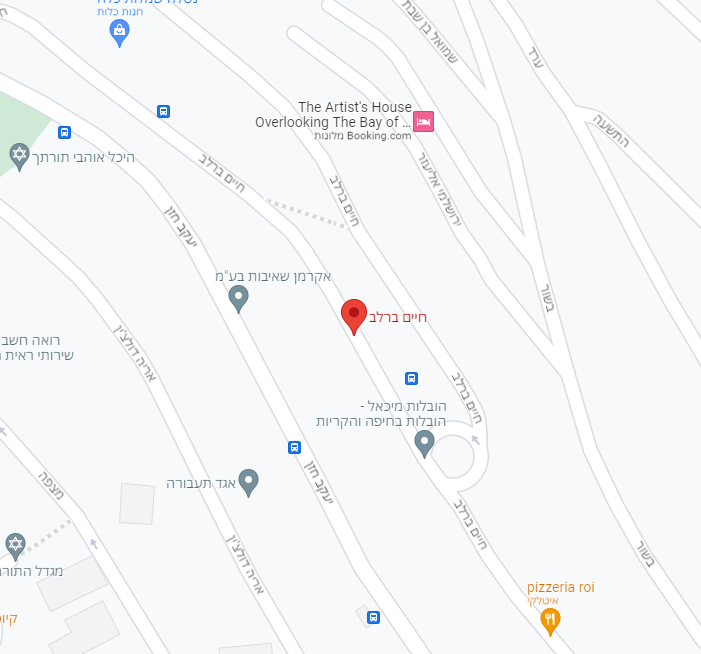

רחוב בר לב
חיים ברוצלבסקי נולד ב-1924 בווינה שבאוסטריה, לדבורה בת יצחק וילקונסקי ולמנחם ברוצלבסקי, כילד האמצעי מבין שלושה. בגיל ארבע עברה משפחתו לעיר זאגרב שביוגוסלביה (בימינו בירת קרואטיה), שם גדל. היה חבר בתנועת הנוער "השומר הצעיר". אביו נמנה עם בכירי תעשיית הטקסטיל ביוגוסלביה. בנערותו רצה להיות וטרינר. בשנת 1939, בגיל 14, עלה לבדו לארץ ישראל ולמד במקווה ישראל. שנתיים לאחר מכן עלו גם שאר בני משפחתו.